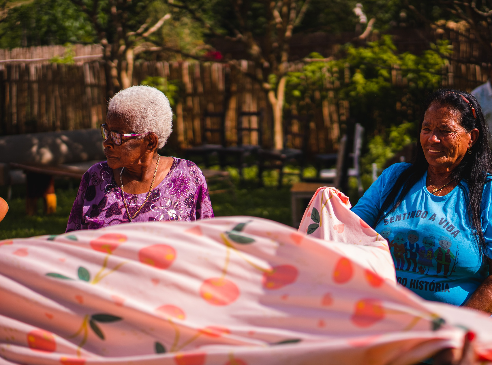

NUNCA EXISTIRÁ FAMÍLIA SUFICIENTE PARA CUIDAR SOZINHA DE 35,2 MILHÕES DE PESSOAS COM 60 ANOS OU MAIS.
Em 2012, eram 22,2 milhões. Em 2025, essa população chegou a 35,2 milhões, 16,6% do Brasil. A rede pública que poderia dividir esse cuidado com as famílias cresceu onde o Estado escolheu investir mais forte, décadas atrás, sobretudo no Sul e no Sudeste: há centro-dia para idoso em São Paulo, no Rio de Janeiro, em Belo Horizonte. Não em Maceió. Não em João Pessoa.
População idosa (22,2 mi em 2012; 35,2 mi em 2025; 16,6% do Brasil): IBGE, dados citados por Correio Braziliense, abr. 2026.
Rede de centros-dia por região: Estado de Minas, mai. 2026.